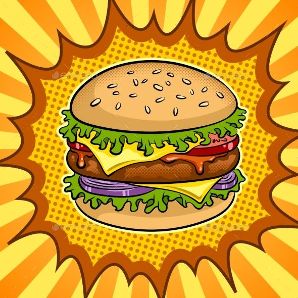

Olá, eu sou
Guilherme Feijó de Sousa
Bioinformata | Estudante de Análise em Desenvolvimento de Sistemas
Ver ProjetosSobre Mim
Olá! Meu nome é Guilherme Feijó de Sousa. Sou pesquisador acadêmico e tenho experiência em análise computacional aplicada à biologia, com foco no processamento e interpretação de dados biológicos complexos.Trabalho em projetos envolvendo bioinformática, modelagem, docking molecular, dinâmica molecular, análise de sequências genéticas e simulações computacionais, para entender processos biológicos em nível molecular.Atualmente curso Análise em Desenvolvimento de Sistemas, buscando desenvolver habilidades técnicas em tecnologia, com foco em programação, banco de dados, UX/UI design e páginas web.
Fora do trabalho, gosto de fazer coisas que me ajudam a relaxar e manter o equilíbrio. Tocar guitarra é uma das minhas maiores paixões. Também aproveito bastante o tempo com minha família e amigos, escuto música o tempo todo, jogo videogame e curto boas conversas. Essas coisas simples fazem diferença no meu dia-a-dia, para manter o foco e equilíbrio nas atividades.
Formação Educacional
- 👨🔬Pesquisador Acadêmico - Laboratório de Bioinformática e Proteômica (UFPel);
- 🎓 Biotecnologista formado pela Universidade Federal de Pelotas;
- 🧬 Mestre em Ciências;
- 💻 Graduação em andamento - Análise em Desenvolvimento de Sistemas (UNINTER);
- 💬 Inglês técnico — leitura e escrita voltadas à programação e artigos científicos.
- 🇺🇸 Inglês Intermediário (conversação)
Meus Projetos
Lancheria Online - Sistema de Solicitação de Pedidos
Este projeto é um site simples para solicitação de pedidos em uma lancheria. O sistema permite que os usuários visualizem o cardápio, adicionem itens ao carrinho e finalizem seus pedidos de forma prática e rápida. As tecnologias utilizadas foram HTML,CSS e JavaScript.
Ver ProjetoQR Code Component - Frontend Mentor Challenge
Projeto de desafio do Frontend Mentor para criar um componente visual de QR Code estático. O objetivo é replicar o design proposto, usando HTML e CSS, sem funcionalidade adicional.
Ver ProjetoMinhas Habilidades
Hard Skills

- Análise de sequências biológicas;
- Modelagem e Predição estrutural in silico de proteínas;
- Docking Molecular;
- Dinâmica Molecular;
- Simulação computacional de processos biológicos.
Bioinformática
- HTML e CSS (básico);
- JavaScript (iniciante).
Programação e Desenvolvimento Front-End
- Python (básico);
- Banco de Dados-MySQL(iniciante).
Programação e Desenvolvimento Back-End
- Figma (básico).
UX/UI Design
- Git e GitHub - versionamento e colaboração (básico).
- Noções de linha de comando - terminal (básico).
- Ferramentas de produtividade científica (Zotero e Mendeley).
Outras habilidades técnicas úteis
Soft Skills

- Explicação de ideias;
- Escrita de documentação e artigos;
- Facilidade em realizar apresentações e palestras.
Comunicação
- Identificação da problemática;
- Pensamento crítico, científico e tecnológico.
Resolução de Problemas
- Aprender novas metodologias e ferramentas;
- Lidar com mudanças.
Facilidade de Adaptação
- Priorizar tarefas;
- Organização de tarefas pendentes e mais importantes;
- Cumprimento dos prazos.
Gestão de Tempo
- Orientar e ensinar colegas;
- Liderar reuniões;
- Sugestão de melhorias.
Liderança e Iniciativa
Contato
Ficou interessado? Entre em contato!